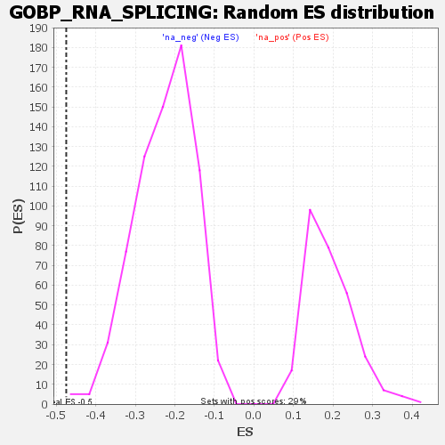

| | | Dataset | genes_ranked_stat_0.1 |
| Phenotype | NoPhenotypeAvailable |
| Upregulated in class | na_neg |
| GeneSet | GOBP_RNA_SPLICING |
| Enrichment Score (ES) | -0.4744675 |
| Normalized Enrichment Score (NES) | -2.0936627 |
| Nominal p-value | 0.005602241 |
| FDR q-value | 0.14911516 |
| FWER p-Value | 0.688 |
Table: GSEA Results Summary
 Fig 1: Enrichment plot: GOBP_RNA_SPLICING
Fig 1: Enrichment plot: GOBP_RNA_SPLICING
Profile of the Running ES Score & Positions of GeneSet Members on the Rank Ordered List

Fig 2: GOBP_RNA_SPLICING: Random ES distribution
Gene set null distribution of ES for GOBP_RNA_SPLICING